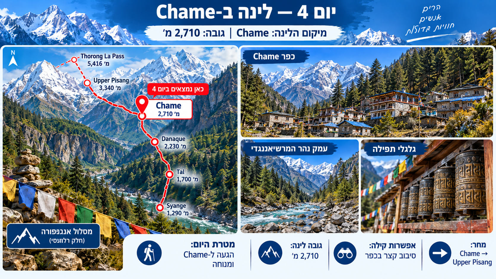
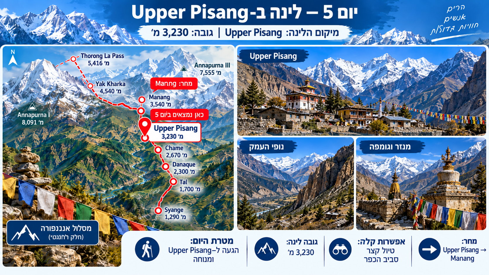
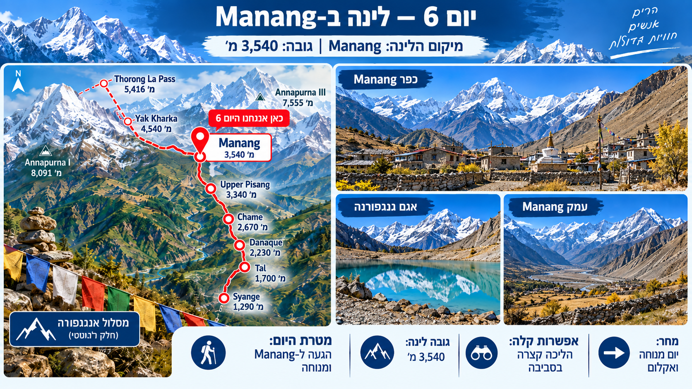
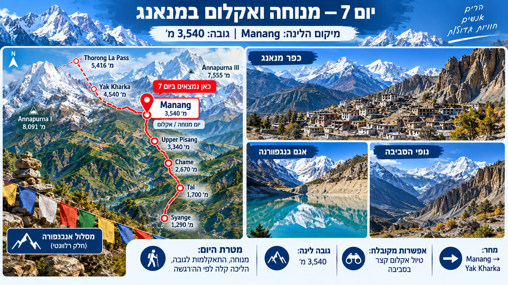
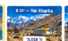
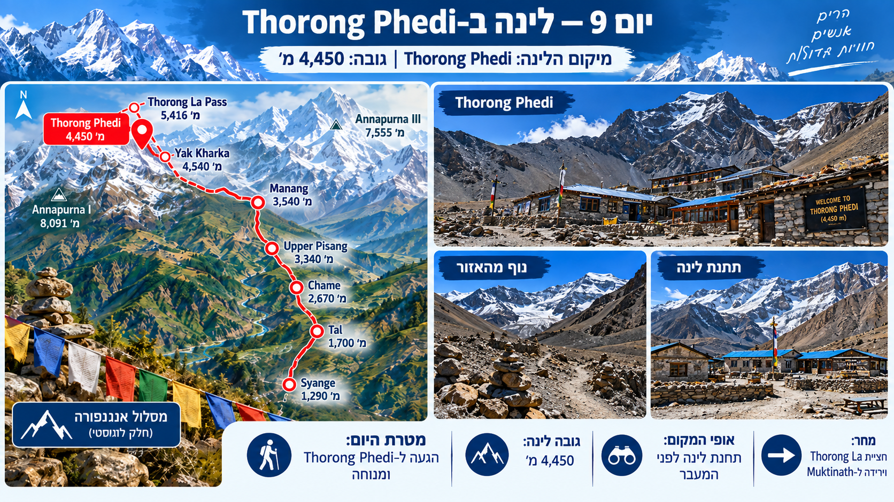
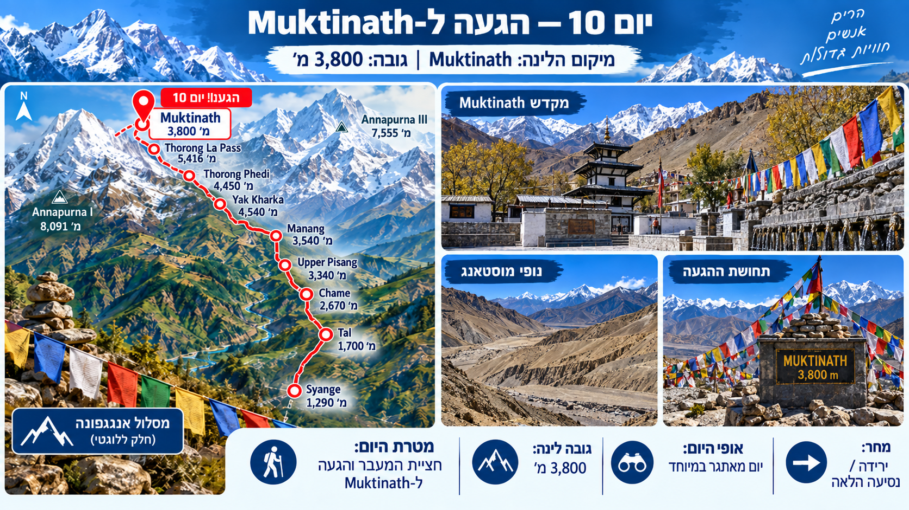

יום 4 2,710 מ'לינה ב-Chame
הגעה ל-Chame, נופי נהר המרשיאנגדי, גלגלי תפילה בדרך ומנוחה בכפר.
המסלול של עמית • ימים 4 עד 10 • יומן מסע

יום 4 2,710 מ'הגעה ל-Chame, נופי נהר המרשיאנגדי, גלגלי תפילה בדרך ומנוחה בכפר.

יום 5 3,230 מ'עלייה לפיסאנג העליונה, נוף עוצר נשימה לעמק, מנזר טיבטי עתיק וגומפה.

יום 6 3,540 מ'הגעה לכפר מנאנג, נופי אגמי העמק והרי גנגפורנה המושלגים.

יום 7★ 3,540 מ' ✨ התמונה המאושרתיום מנוחה מתוכנן, התאקלמות לגובה, הליכה קלה לפי הרגשה ואגם גנגפורנה הטורקיז.

יום 8 4,018 מ'חציית קו 4,000 המטרים, שטחי מרעה של יאקים, אוויר דליל ונוף פתוח להרים.

יום 9 4,450 מ'מחנה הבסיס לפני מעבר טורונג לה, התארגנות ומנוחה לקראת הטיפוס לפסגה.

יום 10 מעבר 5,416 מ' | לינה 3,800 מ'יום השיא של המסלול! העפלה לפסגת מעבר Thorong La בגובה 5,416 מ' וירידה למוקטינאת'.